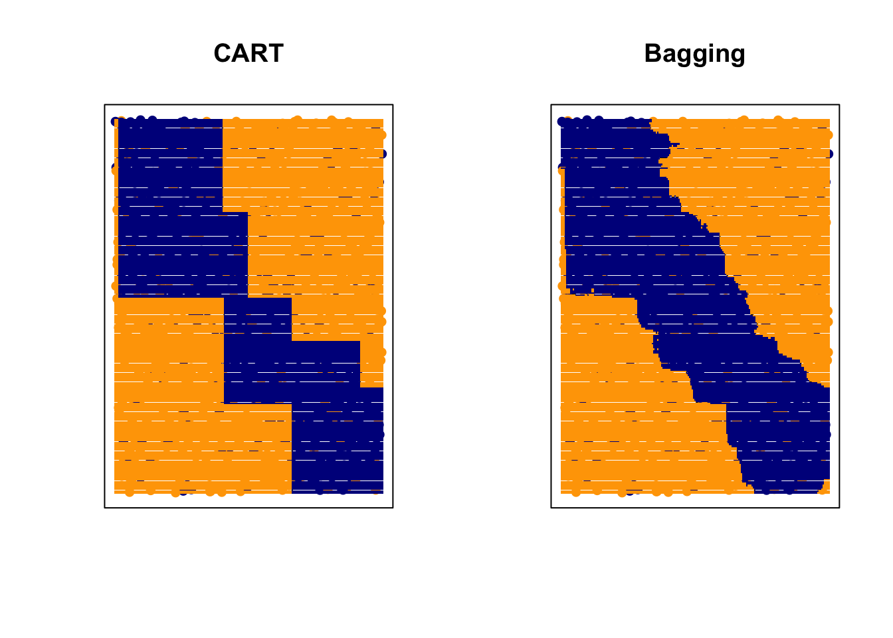

9.2 Random Forests
In the regression framework, we have already discussed the disadvantage of using a single tree for making predictions and how we can increase the prediction accuracy by aggregating “weak learners” that are unstable and less accurate to construct “strong learners”.
Bagging, Boosting, and Random Forests are all methods that combine weak learners to develop stronger ones. Bagging and Random Forests learn individual trees with some random perturbations, and then average them. Boosting on the other hand progressively learns models with small magnitude, then adds them.
9.2.1 Bagging Predictors for Classification
We start by bootstrapping samples with replacement which implies that some observations can be repeated multiple times. Then, we fit a CART model to each bootstrap sample (may require tuning using CV) and we combine each learner, using the majority vote for classification problems: \[\hat{f}_{bag}(x) = \text{ Majority Vote } \Bigl \{\hat{f}_b(x )\Bigr \}_{b=1}^{B}\] This can dramatically reduce the variance of individual learners. In this example, CART can be replaced by other weak learners. In the toy example below, we can see the difference between CART and Bagging:
# Simulate data to use for the example
set.seed(2)
n = 1000
x1 = runif(n, -1, 1)
x2 = runif(n, -1, 1)
y = rbinom(n, size = 1, prob = ifelse((x1 + x2 > -0.5) & (x1 +
x2 < 0.5), 0.8, 0.2))
xgrid = expand.grid(x1 = seq(-1, 1, 0.01), x2 = seq(-1, 1, 0.01))
par(mfrow = c(1, 2))
# Fit CART using rpart
library(rpart)
rpart.fit = rpart(as.factor(y) ~ x1 + x2, data = data.frame(x1,
x2, y))
# we could fit a different tree using a bootstrap sample
# rpart.fit = rpart(as.factor(y)~x1+x2, data =
# data.frame(x1, x2, y)[sample(1:n, n, replace = TRUE), ])
pred = matrix(predict(rpart.fit, xgrid, type = "class") == 1,
201, 201)
contour(seq(-1, 1, 0.01), seq(-1, 1, 0.01), pred, levels = 0.5,
labels = "", axes = FALSE)
points(x1, x2, col = ifelse(y == 1, "darkblue", "orange"), pch = 16,
yaxt = "n", xaxt = "n")
points(xgrid, pch = ".", cex = 1.2, col = ifelse(pred, "darkblue",
"orange"))
box()
title("CART")
# fit Bagging
library(ipred)
bag.fit = bagging(as.factor(y) ~ x1 + x2, data = data.frame(x1,
x2, y), nbagg = 200, ns = 400)
pred = matrix(predict(prune(bag.fit), xgrid) == 1, 201, 201)
contour(seq(-1, 1, 0.01), seq(-1, 1, 0.01), pred, levels = 0.5,
labels = "", axes = FALSE)
points(x1, x2, col = ifelse(y == 1, "darkblue", "orange"), pch = 16,
yaxt = "n", xaxt = "n")
points(xgrid, pch = ".", cex = 1.2, col = ifelse(pred, "darkblue",
"orange"))
box()
title("Bagging")
Bagging can dramatically reduce the variance of unstable “weak learners” like trees, leading to improved prediction. However, the simple structure of trees will be lost due to bagging, hence it is not easy to interpret. The main disadvantage of this approach is the high correlation of the trees (weak learners) which may make averaging not effective.
9.2.2 Random Forests
Random forests are equipped with the same bootstrapping strategy, but also with additional randomness that is controlled by the methods hyperparameters that need to be tuned. For example, to apply a random forest algorithm, we need to know
the number of trees, many controls the stability. We typically want to fit a large number of trees.
how many samples to use when fitting each tree. In practice, we often use the training sample size if sampled with replacement.
the number of randomly sampled variable to consider at each internal node. This need to be tuned for adaptiveness to sparse signal (large mtry) or highly correlated features (small mtry).
We stop splitting when the node sample size is no larger than node size. This works similar to k in a KNN model. However, its effect can be greatly affected by other tuning parameters.
# generate some data with larger p
set.seed(542)
n = 1000
p = 10
X = matrix(runif(n * p, -1, 1), n, p)
x1 = X[, 1]
x2 = X[, 2]
y = rbinom(n, size = 1, prob = ifelse((x1 + x2 > -0.5) & (x1 +
x2 < 0.5), 0.8, 0.2))
xgrid = expand.grid(x1 = seq(-1, 1, 0.01), x2 = seq(-1, 1, 0.01))
# fit random forests with a selected tuning
library(randomForest)
rf.fit = randomForest(X, as.factor(y), ntree = 1000, mtry = 7,
nodesize = 10, sampsize = 800)Instead of generating a set of testing samples labels, let’s directly compare with the “true” decision rule, the Bayes rule.
# the testing data
Xtest = matrix(runif(n * p, -1, 1), n, p)
# the Bayes rule
BayesRule = ifelse((Xtest[, 1] + Xtest[, 2] > -0.5) & (Xtest[,
1] + Xtest[, 2] < 0.5), 1, 0)
mean((predict(rf.fit, Xtest) == "1") == BayesRule)## [1] 0.826